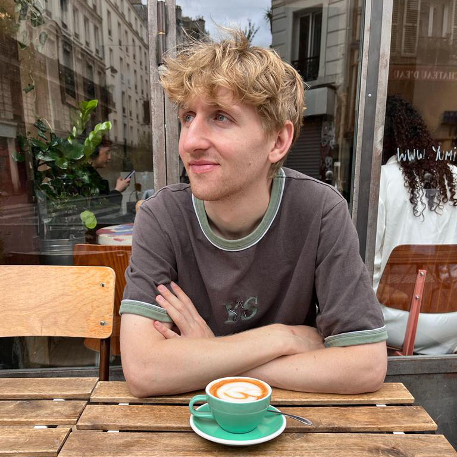

Nick Vieweg

Eagerly pursuing a career as a front-end web developer, I am constantly expanding my technical knowledge in the digital space. I have a computer science degree and experience building functional websites for a range of clients. I like to create visually appealing and intuitive websites, using my passion for filmmaking to add a unique narrative and aesthetic to my projects.
Education
- University Of The Arts London, MA Documentary Film (2020- 2021).1:1
- University Of Brighton, Bsc Hons Degree Digital Media (Computer Science) (2014 - 2017). 2:1.
- South Downs College, A-Levels. Media Studies, Maths and Business Studies.
- Priory School Portsmouth, 11 A- C’s. GCSE
Work Experience
VMI.TV (2020 - Present)
A Busy rental house in the heart of London, Supplying kit for TV Shows such as Midsummer Murders
- Camera Technician (2022/Present) Working on the camera floor of the warehouse as a technician. Servicing and building high end film equip- ment packages including cinema cameras such as the Alexa Mini, Ronin gimbals and LED Lighting.
-
Client Contact, Rental Team (2021/2022)Assisting producers and DOP’s over the phone to build custom kit lists for their film shoots. Also organising transport and managing stock levels.
-
Web Assistant (2020/2021) Assisting the build, migration and over all functionality of the new VMI website including product photogra- phy, data entry and Page Design.
Freelance Web Designer 2018/2019
Post-graduation, I began working on a few website projects for a selection of clients. My journey led me to use the Content management system,, WordPress, recognizing its versatil- ity in meeting varied client demands. As a one-man band, I managed projects from initial design to final, functional websites. Key projects include:
- Avenueskateboards.co.uk: An online storefront for a Manchester-based skateboard store.
- All7.co.uk: A digital portfolio for a film production company.
- Yourboiler.co: A web presence for a Portsmouth-based boiler company.
- nickvieweg.com: My personal film portfolio
This experience honed my skills in adapting designs to different industries, ensuring each website uniquely represented the client’s brand and business needs.
Hobbies
Contact Me